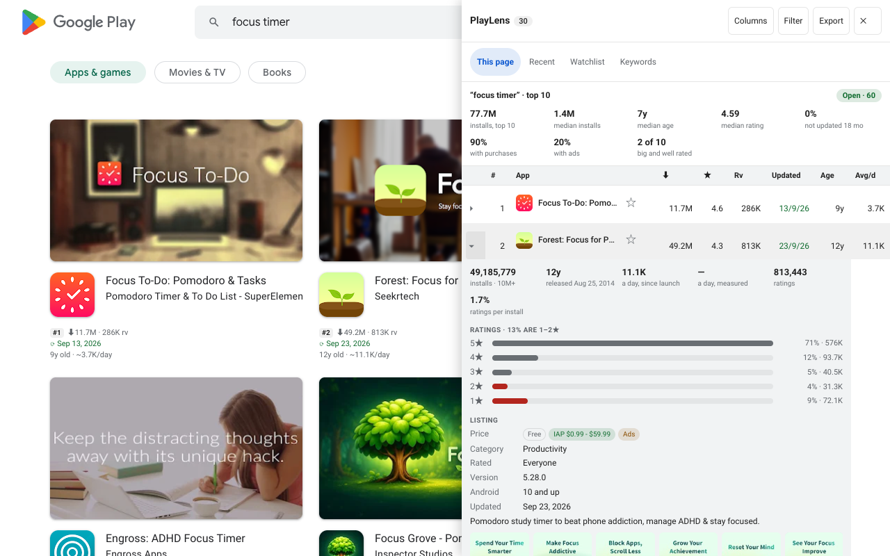

Why low-star reviews
Five-star reviews say “nice”. One- to three-star reviews say what is missing, what broke and what people would pay to have fixed. For a competitor that is a ready-made list of features you could do better.
Open them
- In the side panel, open an app's details with More.
- Click Low-star reviews. The newest 1–3★ reviews load, and More reads the next batch.
- Above the list, a few chips show the words that come up most, with how many of the reviews mention each.

Export
Export CSV or Export JSON reads the reviews and saves them, filtered by stars and date. Stop ends the read early and saves what is already there. Reviewer names are left out on purpose.
Also in the details drawer
- Exact installs next to Play's bucket, release date, and installs per day since launch and measured.
- Ratings per install, and the spread of 1–5★ with the share of 1–2★.
- Price, in-app purchases and ads, category, version, minimum Android, data safety labels.
- Developer email and website with a copy button, and links to AppBrain, APKMirror and the App Store.
- Compare countries: rating and prices per country, one request each, only when you ask.
Questions
Where do the reviews come from?
From the same endpoint the Play site itself calls. They are requested only when you click, never in the background.